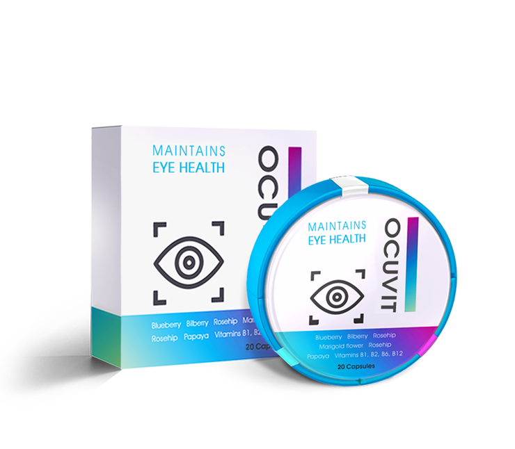

Ein Optiker hat mir das Leben gerettet
Sehvermögen nach nur 1 Kurs und völlig ohne Ärzte wiederherstellen
In meinem heutigen Artikel werde ich euch meine Erfahrung mit der Sehkorrektur teilen. Die Ausgangsdaten waren wie folgt: Lindes Auge -5, rechtes Auge -4. Mittlerweile habe ich eine 100% Sehkraft. Was aber gar nicht so einfach für mich gewesen ist. Diese Geschichte wird Ihnen helfen den Weg zur perfekten Sehkraft bis auf 1 Monat zu verkürzen.
Meine Sehkraft hat sich verschlechtert, als ich noch ein Kind war. Wegen meinem schlechten Sehvermögen hatte ich sehr viele Vorfälle im Leben, wofür ich mich geschämt habe. Wie zum Beispiel dafür, dass ich ständig irgendwelche Leute begrüßte, die ich nicht kannte.
Mit 22 Jahren habe ich angefangen Kontaktlinsen zu tragen. Für das Geld, das ich für sie ausgegeben habe, konnte ich mir ein gutes Auto holen. Doch mit 30 Jahren hatte ich weder ein Auto, noch ein gutes Sehvermögen. Nach langen Überlegungen habe ich mich für extremen Maßnahmen entschieden, nämlich einer OP.
Wie verläuft eine OP
Vor der Operation durfte ich einen Monat lang keine Kontaktlinsen tragen, was dazu führte, dass ich in dieser Zeit etwa 10 mal in den falschen Bus eingestiegen bin. Dann wurde ich mehrmals beraten und anschließend überprüfte man auf die verschiedensten Arten meine Sehkraft.
Mir persönlich hat eine der fortschrittlichsten Methoden zur Sehkorrektur, kann mich nicht mehr an die Bezeichnung erinnern, weckte aber durchaus Vertrauen.

Am Tag vor der Operation hat man mir gesagt drei verschiedene Arten von Augentropfen zu kaufen und Kleidung und Sonnenbrille mitzunehmen. Und dazu sollte mich auch jemand begleiten. Leider konnte mir dabei aber niemand helfen.
Um 9 Uhr morgens kam ich in die Klinik. Zog mich um und bekam eine Anästhesie in die Augen verpasst. Nach etwa 20 Minuten wurde ich in den Operationsraum gebracht. Dann begann man mir etwa aus dem Auge herauszuschneiden und ich habe alles nur noch sehr verschwommen gesehen. Anschließend das Gleiche auch mit dem anderen Auge.

Nach der OP ist die Trübung langsam verschwunden. Der Arzt hat mich angeschaut und tropfte mir die Augentropfen in die Augen. Dabei habe ich überhaupt keine Schmerzen verspürt, es rollten mir nur paar Tränen aus den Augen. Anschließend ließ mich der Arzt nach Hause gehen, das ich nur in paar Stunden, statt der üblichen 30 Minuten, erreicht habe.
Zu Hause angekommen, habe ich mir die Tränen abgewischt, die nicht aufhörten zu gehen. Am Abend hat sich das Sehvermögen schon etwas verbessert und ich konnte wenigsten sehen, wie viel Uhr es ist. Nachdem aber die Anästhesie aufgehört hat zu wirken, hatte ich heftige Schmerzen. Mein ganzer Kopf tat höllisch weh.
Die Freude währte allerdings nicht besonders lange
In ungefähr zwei Wochen, als die Schmerzen vollständig verschwanden, hat sich mein Sehvermögen wirklich verbessert. Zwar nicht zu 100%, aber dennoch besser als vor der Operation. Zum Abend hin sind meine Augen sehr müde geworden und ich habe alles wieder verschwommen gesehen. Nach 5 Monaten hat mein Sehvermögen angefangen schnell zu verschlechtern. Eines Tages hatte ich etwa so ein Sehvermögen:

Ich machte mich auf den Weg zur Apotheke und habe mir wieder Kontaktlinsen gekauft. Als ich sie aber angezogen habe, habe ich dennoch nichts gesehen. Ich brach in Panik aus und hatte zwei Tage lang Depressionen.
Ich habe mich so schlecht gefühlt, dass ich beschlossen habe mich auf einem Forum darüber zu erkundigen. Dort bin ich auf eine Bewertung eines Mannes gestoßen, der nach der OP vollständig erblindet ist. Ich saß fast 48 Stunden ununterbrochen am Computer und habe versucht zumindest etwas zu finden, was mir helfen könnte.

Erschwingliches wirksames Mittel
Anschließend habe ich angefangen andere Artikel zu studieren. Darin stand, dass der Verlust des Sehvermögens nach einer Operation völlig normal ist. Dann habe ich mich angefangen weiter darüber auseinanderzusetzen und fand heraus, dass der Grund dafür Vitamine und Stoffe sind, die für das Sehvermögen verantwortlich sind. Weiter unten findet ihr eine Liste der besten Medikamente. hat mir am besten gefallen. Habe auf der offiziellen Webseite eine Bestellung aufgegeben und es nach wenigen Tagen das Medikament erhalten.
Nachdem ich die Anweisungen studiert und die Zusammensetzung durchgelesen habe, die 100% natürlich ist, habe ich angefangen einzunehmen. Am dritten Tag war ich voller Freude, mein Sehvermögen hat sich wesentlich verbessert. Meine Sehkraft hat sich alle drei, vier Tage verbessert.
Nach etwa drei Wochen konnte ich sogar Straßenschilder sehen. Konnte mir wieder Vögel anschauen und sogar Bücher durchgelesen. Die Augen sind nicht mehr müde geworden. Ich war so begeistert, dass ich ohne Kontaktlinsen alles wieder sehen konnte. Darunter auch die Busnummern und Münzen.
Nach nur einem Kurs habe ich meine Sehkraft wieder testen lassen. Ich war sehr überrascht darüber, dass ich diesmal sogar die unterste Zeile gesehen habe. Das Verdikt des Arztes war, dass ich ein 100% Sehvermögen habe.
Fazit
Inzwischen ist nach dem Kurs mit ein Jahr vergangen und ich habe immer noch ein perfektes Sehvermögen. Warum habe ich beschlossen eine Geschichte zu schreiben? Ich habe beschlossen den Kurs zu wiederholen und habe versucht es in einer Apotheke zu erwerben, doch dort stand es nicht zum Verkauf! Das rief bei mir so viele Gefühle hervor. Schließlich hätte dieses Medikament allen Menschen helfen können. Hier ist der Link zur Webseite, damit Sie nicht ene Fälschung stößen.
Kommentare ( 12 )
Das ist nicht das erste Mal, dass ich davon gehört habe, dass sich die Sehkraft verschlechtert hat. Meine Freundin ließ sich vor zwei Jahren auch operieren. Für eine kurze Zeit hat sich zwar das Sehvermögen wiederhergestellt, doch dann hat es sich wieder verschlechtert
Danke! Endlich wurde ein Mittel entwickelt, das mir helfen kann. Ich habe es schon satt ständig eine Brille zu tragen. Abends hatte ich ich ständig Schmerzen. Habe es mir auch bestellt, warte nun auf das Paket
Ich trage seit 6 Jahren Kontaktlinsen und habe immer gehofft, dass ich eines Tages wieder ohne sie auskommen werde. Dann habe ich von erfahren. In nur 4 Wochen hat sich mein Sehvermögen von -6 auf -2 verbessert. Ich bin überfroh!:)
Ich habe übrigens nie eine Brille getragen, als ich aber die Brille eines Bekannten anprobiert habe und sie anschließend wieder ausgezogen habe, hatte ich das Gefühl, dass ich blind bin. Habe deswegen jetzt bestellt
Habe sieben Jahre lang Kontaktlinsen getragen, weshalb aufgrund des Sauerstoffmangels eine Netzhautdegeneration aufgetreten ist. Der Arzt hat mir sofort verschrieben und mein Sehvermögen liegt jetzt fast bei 100%
Ich hatte zunächst eine Sehkraft von -2,5 und dann plötzlich -4. Dabei konnte keine Brille oder Kontaktlinsen tragen. Und da ich Student bin, habe ich auch kein Geld für eine OP. Ich musste also nach einer effektiven Alternative suchen. Mein Arzt hat mir empfohlen. In anderthalb Monaten war das Sehvermögen vollständig wiederhergestellt
Ich habe mir auch bestellt und nehme es schon zwei Wochen lang ein. Inzwischen hat sich mein Sehvermögen verbessert. Es hat überhaupt keine Nebenwirkungen, die Augen werden nicht einmal müde.
Mein Sehvermögen lag bei minus 9. Nachdem ich zehn Jahre lang Kontaktlinsen getragen habe, habe ich eine starke Bindehautentzündung und eine demodektische Blepharitis bekommen. Und das obwohl ich immer gute und teure Kontaktlinsen getragen habe. Mein letzter Augenarzt hat mir empfohlen. Nach nur einem Kurs, hat sich meine Sehkraft auf minus 1 wiederhergestellt. Bin mit dem Produkt sehr zufrieden :)
Ich habe seit meiner Geburt ein Sehvermögen von -14,5 und 15,5! Dachte, dass es nicht weiter verschlimmern kann. Etwas später stellte es sich heraus, dass es doch noch möglich ist. Mit 22 waren es bei mir -17,5 und -18. Vor ungefähr zwei Monaten habe ich angefangen einzunehmen. In dieser Zeit hat sich die Sehstärke auf -4,5 und 5 verbessert! Ohne dieses Mittel wüsste ich gar nicht, was ma nnoch tun könnte.
Ich hatte ein Sehvermögen von -5. Ließ mich mehrmals behandeln, aber ohne großen Erfolg. Hat mir nur zeitweise geholfen. hat mir dabei aber tatsächlich geholfen. Seit etwa einem halben Jahr habe ich ein 100% Sehvermögen
Ich habe eine Sehkraft von -5. Dabei bin ich erst 32 Jahre alt. Habe große Angst davor, dass es sich weiterhin verschlimmern wird. Trage derzeit Kontaktlinsen. Könnte mir jemand verraten, ob in Apotheken verkauft wird?
Nein, habe ich nicht gesehen. Bestellen Sie am besten auf der offiziellen Webseite, dort ist es viel günstiger und 100% keine Fälschung